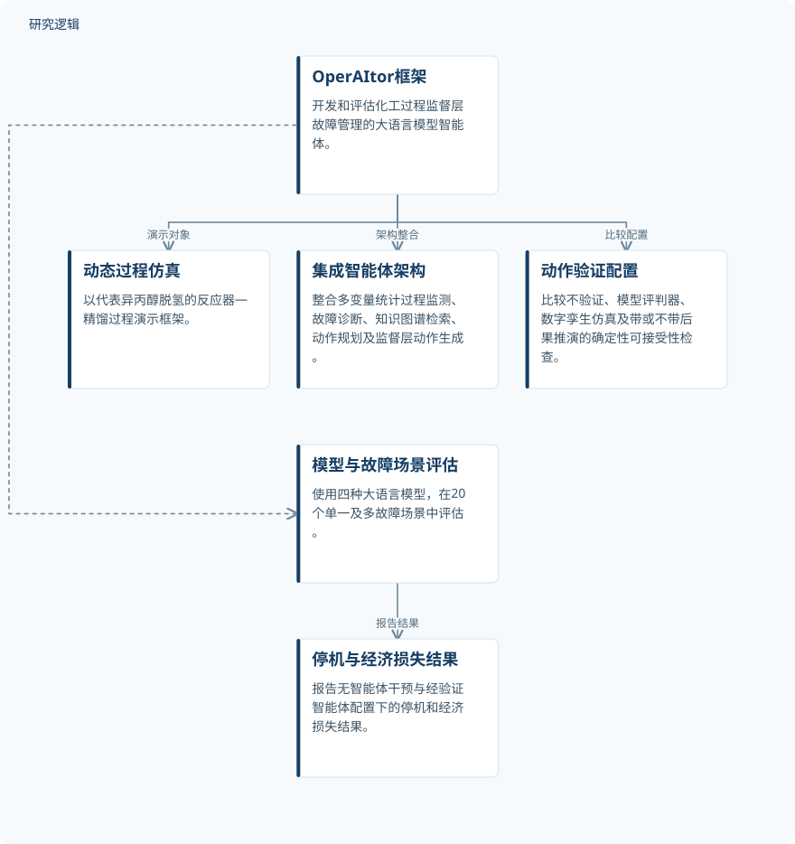

摘要解读
OperAItor：面向化工过程容错运行的智能体框架
OperAItor: An Agentic Framework for Fault-Tolerant Operation of Chemical Processes
解读更新 2026-11-10 10:01 · 依据公开摘要整理，未核验全文细节
化工过程发生故障时，大语言模型智能体能否帮助减少停车，又该如何约束其操作？OperAItor以动态流程仿真为基础，将故障管理与动作验证放进同一评估框架，为阅读“智能体能做什么、验证机制有何作用”提供了具体案例。
文章目录
从故障识别走向监督层操作
这项研究关注化工过程的监督层故障管理，而不只是识别异常。OperAItor被介绍为用于开发和评估大语言模型智能体的开源框架，其比较对象包括智能体架构、语言模型和动作验证方法。
演示对象是代表异丙醇脱氢的动态反应器—精馏过程，采用基于物理的热力学描述，并修改反应动力学以允许液相运行。模拟装置包含PI控制回路、过程报警、主备泵组及独立安全仪表功能，为智能体提供了具有控制与安全约束的故障管理环境。
把操作生成与动作验证放在一起比较
过程由含113个变量的微分—代数模型表示，额定进料为100kmol/h，丙酮产量约4t/h。智能体架构整合多变量统计过程监测、故障诊断、知识图谱检索、动作规划与监督层动作生成。
研究考察5种动作验证配置：不验证、基于大语言模型的评判器、数字孪生仿真，以及不带和带后果投影的确定性可接受性检查。评估覆盖4个大语言模型和20个单故障或多故障同时发生的场景。
依据摘要整理的OperAItor研究构成


展示框架与仿真对象、智能体架构及评估配置的关系，不代表论文原图，也不表示组件的严格执行顺序。
下载 SVG图示关系说明
实线表示相邻阶段的信息流，虚线表示跨阶段联系或反馈。
OperAItor框架 → 动态反应器—精馏过程：演示对象；OperAItor框架 → 智能体架构：架构组成；OperAItor框架 → 动作验证配置比较：考察验证配置；OperAItor框架 → 故障场景评估：开展评估
经验证的智能体配置减少了模拟停车
在没有智能体干预时，18个场景发生装置停车；按照所假设的基准经济条件，相对无故障运行的经济损失为$399,000。对于GPT-5 nano、Qwen3 8B和Mistral 7B，摘要报告，经验证的智能体配置将停车场景数降至5-8，并挽回$265,000的损失。
这些结果支持在该仿真基准中比较智能体与动作验证方案的价值。需要保留的限定是：经济收益依赖基准经济假设，不能直接视为真实工厂已经实现的收益。
结果尚不能拆解为模型与验证器排名
本解读仅依据完整摘要。摘要未给出各故障类型的分布、重复运行次数、随机性处理及各模型与验证配置的完整交叉结果，因此无法判断结果波动，也无法确定哪种验证机制贡献最大。
摘要没有展开另一个受测模型的表现、故障严重程度及验证开销，也不足以判断向其他流程或真实装置迁移的范围。这些是当前资料无法回答的问题，并不意味着论文没有开展相关分析。
阅读启发：关注操作约束，而非只看模型能力
阅读启发：对AI智能运维而言，值得进一步阅读的是动作如何被判为可接受，以及验证结果怎样影响后续操作。可重点核对不同配置面对相同故障时的表现、后果投影的具体含义，以及停车和经济损失的计算口径，再讨论模型能力与验证机制各自的作用。
以上为本站阅读启发与建议，不是论文已验证的结论。